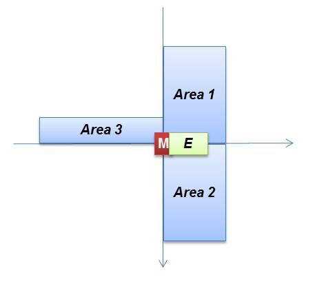

Mario AI
A mario AI handle that simulates people's behavior when playing Mario Game
Finite State Machine
Gap-Status
Obstacle-Status
Enemy-Insight-Status

A mario AI handle that simulates people's behavior when playing Mario Game
You can download my AI and Level Generator from my GitHub. (Java Project)
Visit Download Page